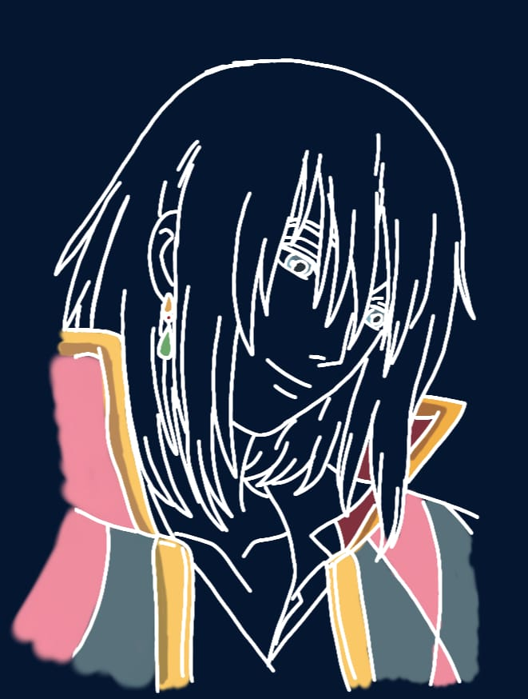

click me

Let's study with Howl's and Calcifer ! IMissMyHowl's is my first personal project I worked on, Ghibli has always been a huge comfort and motivation for me, I had lots of fun learning and building this study website. I hope you enjoy it as much as I do.
Use Chrome for the best experience !
Inspired by IMissMyCafe, IMissMyBar, and IMissMyOffice. Code and illustration by Baron (me). No copyright infringement intended.
All Audios are from YT
Finish your tasks with Howl's and Calcifer
NOT COMPLETED
COMPLETED
⏳ Pomodoro timer
